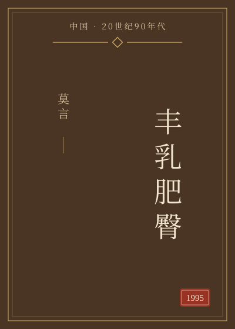
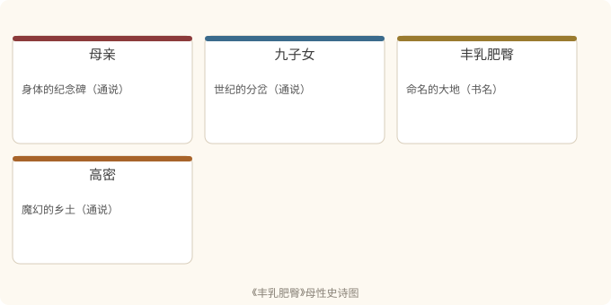

丰乳肥臀
一、基本信息
| 作者 | 莫言 |
|---|---|
| 成书/出版 | 1995年（作者页注记：Britannica 列举——丰乳肥臀 (1995)） Mo Yan — Encyclopaedia Britannica（百科全书） |
| 国别/地区 | 中国 |
| 时代 | 近代 · 20世纪90年代 |
| 体裁 | 长篇小说 |
| 语言 | 汉语 |

《丰乳肥臀》母性史诗图（主题·结构图）
二、创作背景
作者页注记：丰乳肥臀 (1995)、檀香刑 (2001)——'重要长篇（Britannica 列举）'。
Britannica：莫言——2012诺奖（作者页交叉——待核）。
题材（通说待核）：上官鲁氏与九个子女——从抗战到90年代的母系史诗。
三、内容脉络
（通说待核）母亲与金童：多子女的世纪苦难。
（通说待核）'丰乳肥臀'：母性身体的纪念碑。
四、主要人物表
| 人物 | 身份 | 说明 |
|---|---|---|
| 上官鲁氏 | 母亲 | （通说待核） |
| 金童 | 独子 | （通说待核） |
五、主题与艺术特点
- 母性史诗（书名语境——通说待核）。
- 20世纪中国的家族史（通说待核）。
- '重要长篇'（B注记）。
六、影响与评论
- Britannica：'重要长篇'（作者页注记）。
Mo Yan — Encyclopaedia Britannica（百科全书） - Britannica：莫言2012诺奖（作者页交叉——待核）。
Mo Yan — Encyclopaedia Britannica（百科全书）
七、阅读建议
难点
- 高密东北乡世系。
- '魔幻乡土'的语体（通说待核）。
- 《丰乳肥臀》（作家出版社等——通说待核）。
- 1995年《大家》连载说待核。
莫言长篇首选；与《檀香刑》《红高粱》对读。
八、待核实
- 上官鲁氏人名核对（通说）。
- 1995年出版细节待核。
- '母系史诗'说法待核。